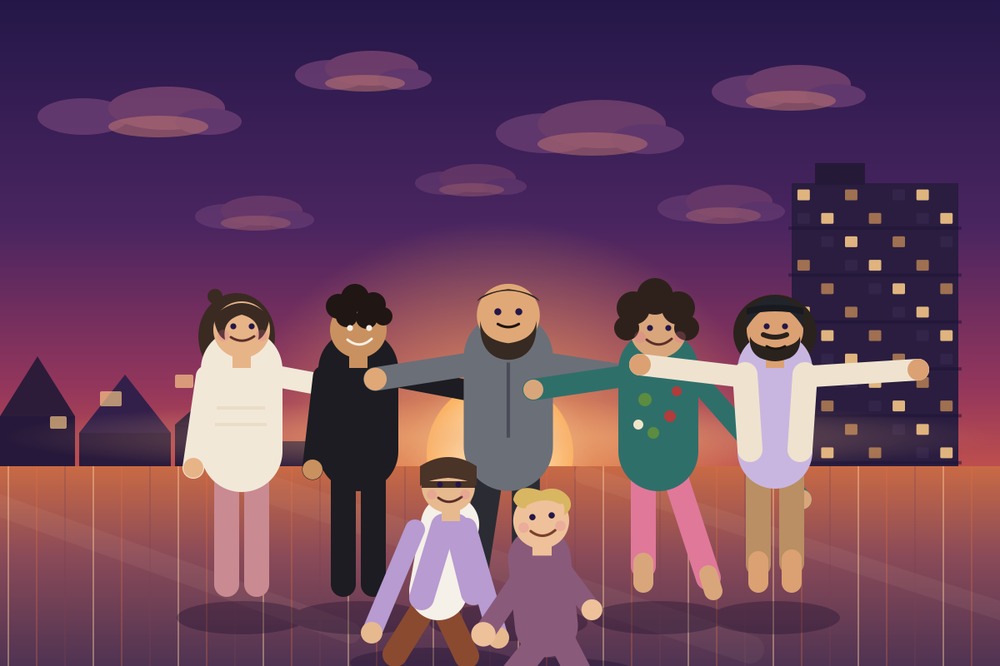

Alfi
Alfi bringt die Wärme mit — im Strickpulli und in der Umarmung. Wer neu ist, kriegt garantiert einen Platz an ihrer Seite.
Sieben Menschen, ein Dach, eine Stadt darunter. Manchmal chaotisch, meistens warm — und immer mit Blick auf den Sonnenuntergang.

Wir, auf unserem Dach — als Poster verewigt.
Sieben Köpfe, sieben Macken, ein Dach.
Alfi bringt die Wärme mit — im Strickpulli und in der Umarmung. Wer neu ist, kriegt garantiert einen Platz an ihrer Seite.
Wilde Locken, wilde Ideen: Cheb hat abends fast immer einen Plan — meistens sogar einen guten.
Der ruhige Anker mit Vollbart. Wenn Berni mit vollem Schwung reinlacht, weiß man: Der Abend wird gut.
Barfuß, bunt gemustert und immer mittendrin. Eva tanzt zuerst und fragt hinterher, warum eigentlich nicht alle mitmachen.
Mit offenen Armen und der Cap leicht schief im Wind — cyman ist der geborene Gastgeber unserer Dachabende.
Pony, Plan und ein Grinsen, dem niemand widerstehen kann. Lea hat für jede Schnapsidee schon eine Checkliste.
Ganz vorne, ganz laut lachend — Franzi liegt meistens als Erste vor Lachen am Boden, aber nie ohne Grund.
Diese kurzen Bios lassen sich jederzeit direkt in about.html anpassen.